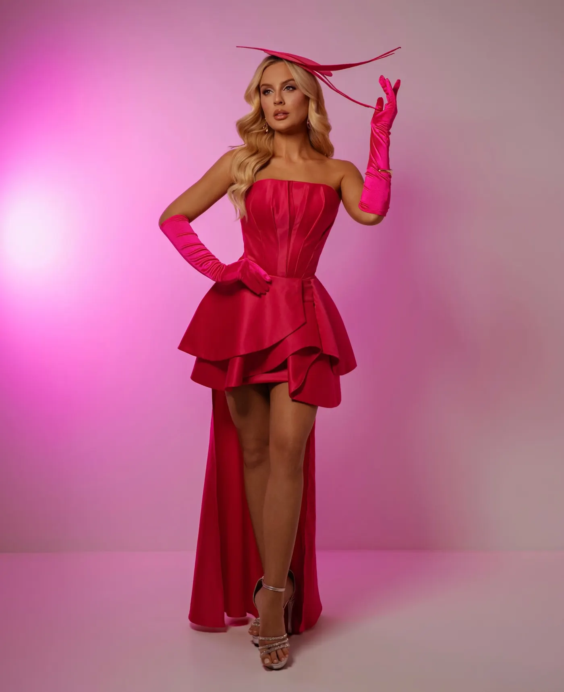
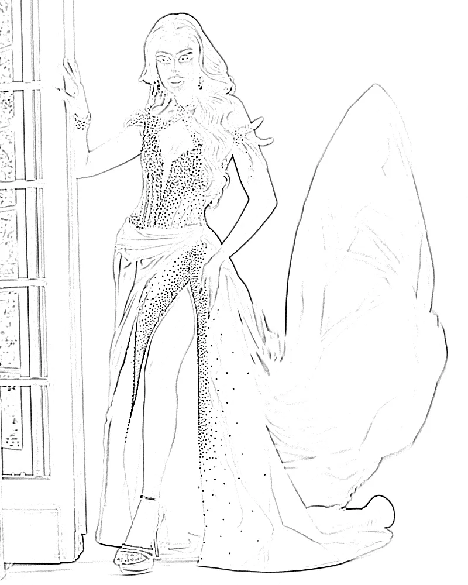
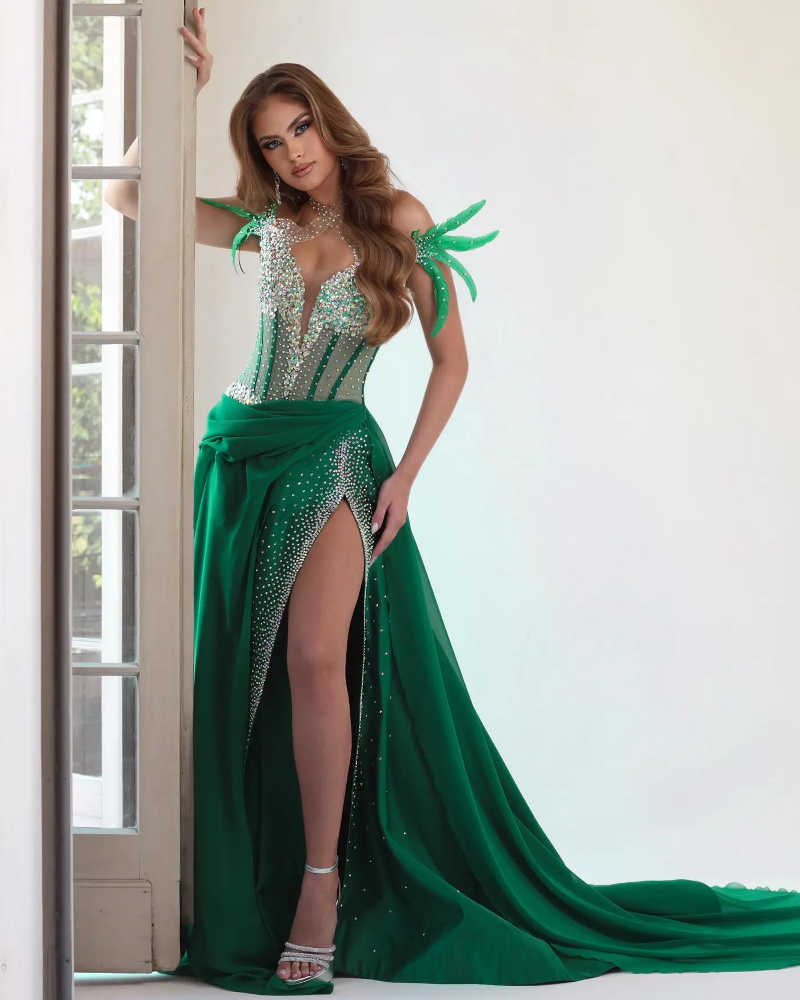
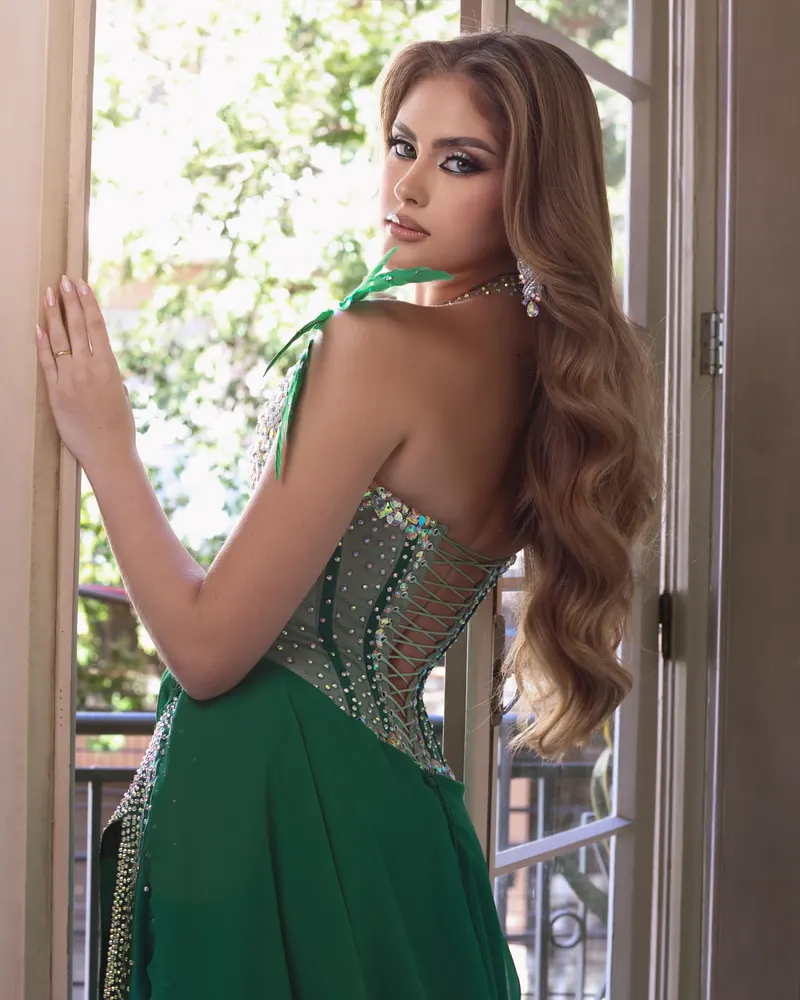
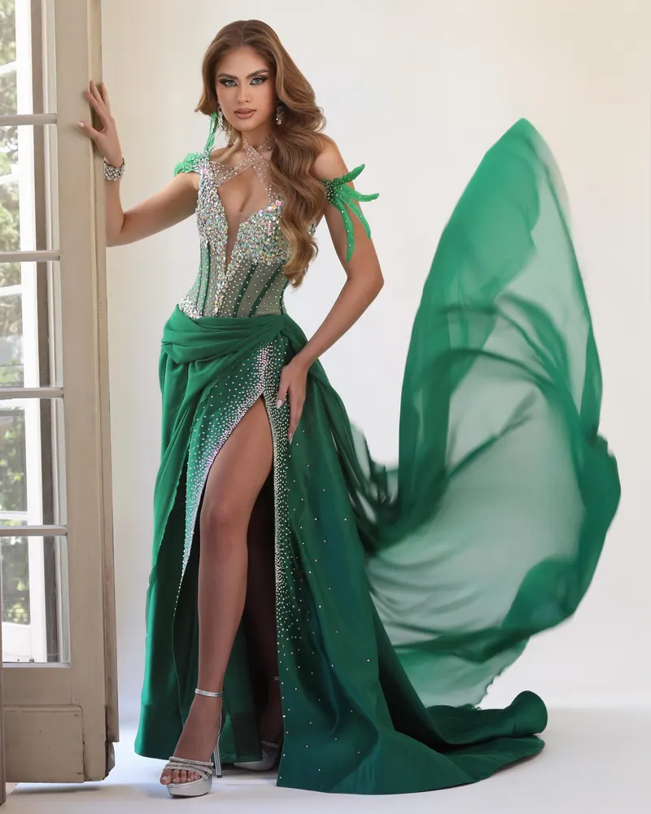

JONAS VIDAL JR. — ATELIER · PASSO FUNDO, RS
Do clássico ao extraordinário.
02 — A CONSTRUÇÃO
Ideia
e desenho
O croqui define silhueta, proporção e intenção antes do primeiro corte.
Modelagem
e estrutura
Moldes, provas e a arquitetura interna — barbatanas, corset, entretela.
Bordado,
acabamento
e detalhes
Pedrarias, rendas e aplicações, ponto a ponto, à mão.
Peça
finalizada.
A criação pronta para quem vai vesti-la.

ETAPA 01 — CROQUI / DESENHO
ETAPA 02 — MODELAGEM / ESTRUTURA
ETAPA 03 — BORDADO E ACABAMENTO
ETAPA 04 — PEÇA FINALIZADA02 — A CONSTRUÇÃO
UNIVERSO 01
CLÁSSICOS
A elegância encontra sua própria forma.
UNIVERSO 02
FIGURINOS & ADEREÇOS
O extraordinário ganha forma.
MISSES · INTERNACIONAIS · PERFORMÁTICOS · ADEREÇOS · TEMÁTICOS
05 — O ARTISTA E O ATELIER
Jonas Vidal Jr.
Estilista, alfaiate e costureiro, Jonas tem 32 anos e 15 de vivência na moda sob medida, diretamente do norte gaúcho, em Passo Fundo — RS.
Ao longo da carreira, sempre esteve entre o mundo clássico e tradicional da alfaiataria e o universo mágico e teatral dos figurinos. É desse choque de realidades que nasce o atelier: um lugar que contempla todo tipo de criação de moda num só lugar.
- EXPERIÊNCIA
- Cerca de 15 anos de atuação em moda.
- FORMAÇÃO
- Design de Moda.
- TÉCNICA
- Estilista, costureiro e alfaiate. Autodidata em corseteria e moda festa. Bordado, pedrarias, rendas, aplicações e modelagem.
- ATELIER
- Desenvolve pessoalmente cada criação, sem equipe fixa.
- PERFORMANCE
- Artista drag — repertório que atravessa a criação de figurinos.
06 — CONTATO
Sua ideia merece uma criação única.
Cada criação começa com uma conversa. Disponibilidade, prazos e valores são tratados individualmente. Atendimento no atelier em Passo Fundo e online para todo o Brasil.